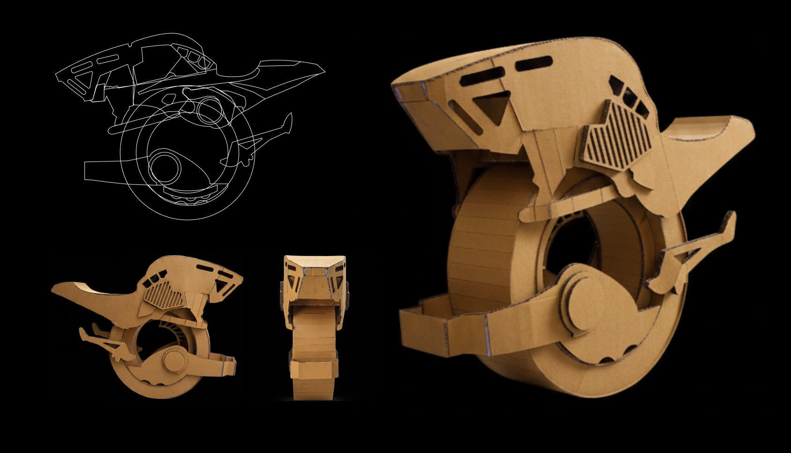
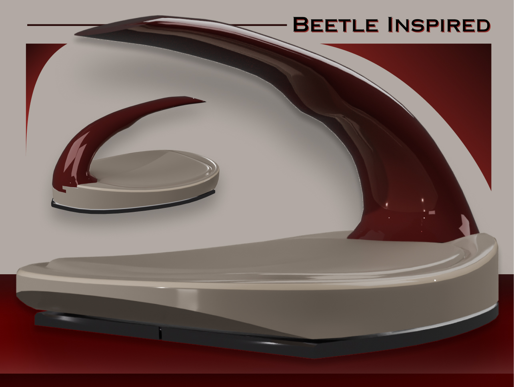

Selected work.
Six projects across furniture, product, universal and interface design. Each one links to its full slides in Portfolio 2.
Gyro Bike
Furniture DesignAs part of the Furniture Design course, the brief was to design an interactive furniture piece for children that also works as a sculptural showpiece when not in use, using a minimum number of wooden components and reduced joinery.
Inspired by the futuristic Gyro Bike from Alita: Battle Angel, the design turns the mono-wheel form into a playful structure: the circular base suggests motion and balance, and the upper surfaces are for sitting, climbing and imaginative play.


Scarava
Biomimicry Form StudyInspired by the beetle’s form and strength, this iron combines organic curves with ergonomic detailing and a removable handle for ease and portability.
AirEase Stand
Basic Product DesignA sleek, ergonomic laptop stand designed for comfort, posture and performance. Inspired by the flow of air and lightweight structural forms, it lifts the workspace with both style and function.


Shoe Shelf
Materials ExplorationDesigned to bring order, elegance and functionality to everyday spaces, a balance of form and utility that turns clutter into visual harmony. Built for compact urban living, it focuses on space efficiency, ease of use and aesthetic simplicity.
Water Dispenser
Universal DesignDesigned with inclusivity at its core: a product that lets everyone, regardless of age, ability or physical strength, access water comfortably and safely. It reimagines the everyday jug through Universal Design, with effortless use, ergonomic handling and intuitive interaction.


Website Design for IGH
UI/UX · Course DS2223Guest house booking at IIT Hyderabad was mostly manual and email-based, which made it slow, unclear and hard to access, especially for parents and external guests.
This project designs a digital platform that simplifies end-to-end booking with intuitive interfaces, real-time availability and inclusive access: check availability, book with ease and get instant confirmation in one place.